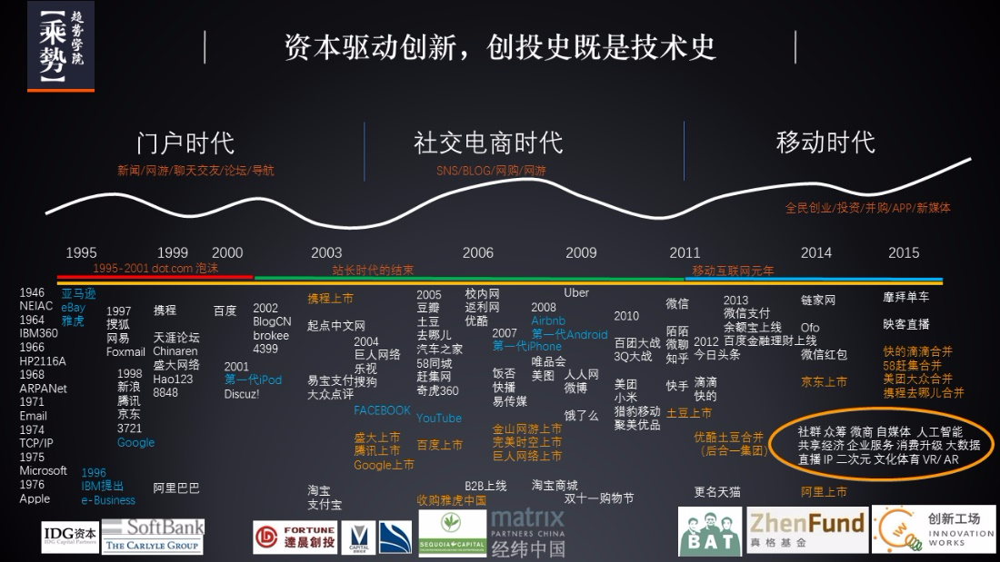
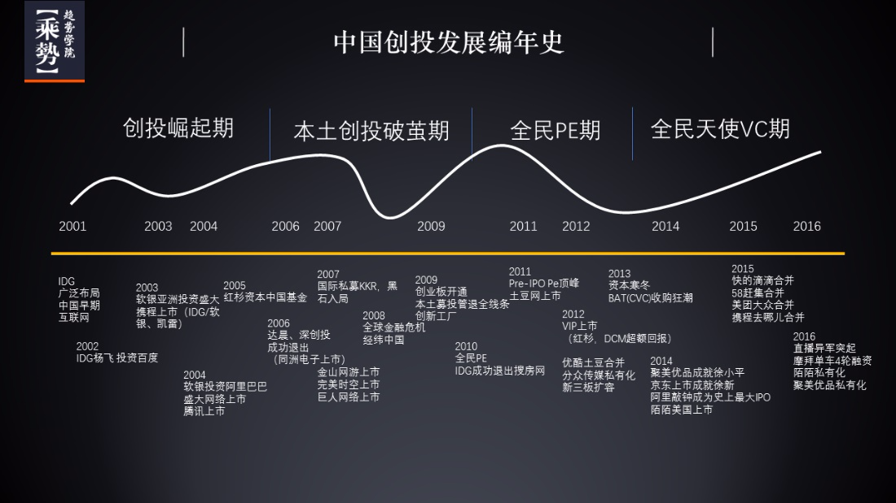

楔子
自2000年以来，Copy to China（C2C）模式一直在中国创新创业领域扮演着一定的角色，也孕育出一些相当成功的商业案例。当然，也有更多的案例因为种种原因而夭折。若果说要问C2C模式现在是否仍然行之有效，很抱歉我们难以给出一个绝对肯定或否定的答案，因为评判一个商业模式的好坏从来不是一件容易的事情，更遑论要预测一个商业模式迁移到截然不同的商业环境后的表现。但我们希望结合已有的案例，从几个角度分析可能影响C2C模式项目落地的因素，并希望成为未来判断该类型项目落地难易程度的参考标准。
历史的机遇
如果粗略的划分，我们可以将00年以前称为中国互联网的萌芽期，00年到10年为中国互联网的野蛮生长期，10年到现在则是移动互联网的生长期。而被广泛研究的C2C模式成功案例多出现在前两个时期，我们认为C2C模式的兴起和变革适合这个时代紧密相关的，特殊的时代赋予了创新模式和创新者们在中国成长的土壤。在中国互联网的萌芽期，选择C2C模式几乎是一种必然，也可以说是，别无选择。

互联网基础方兴未艾
2000年左右的中国互联网方兴未艾，主干网络堪堪完成，个人电脑仍可以算得上奢侈品。决定的当时的互联网仍是中国小众群体才能体验的新鲜事物，在这种背景下，互联网和软件从业者稀少，更遑论能够预见到其巨大潜力的创业者。电脑终端的价格和带宽的限制造成了中美在互联网发展阶段上的巨大落差，因此向美国借鉴先进的互联网应用和模式也显得顺理成章了，腾讯、网易、搜狐、新浪、搜狐等中国第一代互联网公司基本都成立于2000年互联网泡沫前夕，而主要的借鉴的形式也从中国互联网的承载能力出发，以文字信息传播（门户等）和获取（搜索引擎、邮箱等）为主。
本土资本的缺失

如果说网络发展还可以依托于国家政策和资源支持，那么国内的风险资本则基本走得是完全市场化的道路。新千禧年伊始，中国的一级市场风险资本可以说是凤毛菱角，这主要受制于中国仍然十分年轻的资本市场现状和相关监管，本土资本很难判断初创互联网公司在国内发展的趋势，也难以退出变现，因而更多地仍然在债券和二级市场寻求超额收益。本土资本匮乏，中国的互联网创业公司如果需要需求资金支持，只能依靠国际资本。在这种情况下，C2C模式宣称的“中国的xx”，银鱼般地暗示了美国模式在中国复制并成功的可能，因而很有趣地变成了说服国际资本投资的理由之一。如果比较难以想象的话，可以类比印度的电商平台Flipkart融资时对阿里巴巴的对标。
谈及中国互联网公司的早期融资，我们不得不提一下新浪开创性的VIE架构，2000年新浪成功通过VIE构架在美国上市的案例，一方面让国际资本更多地看到了投资中国互联网公司的可能性和进出途径，另一方面也说明了中国互联网行业的大有可为，为本土资本的兴起提供了契机。
变革的因素
如果用一个词来形容中国互联网发展速度的话，那就是“中国速度”。至2010年，中国互联网覆盖用户超过5亿，带宽水平也得到了极大拓宽，得以承载图片、流媒体等大流量应用，并足以应对实时交互需求。伴随互联网基建发展的，是中国互联网从业人群的急速壮大和中国本土风险资本的崛起，这样的变革，显著地影响了C2C模式在中国的发展，可以说这个时期众多C2C模式在中国的落地可以归纳为：适者生存，物竞天择。
更广阔的市场
2010年中国网民人数超过5亿，2017年已经超过7.5亿，这是一个数倍于美国的互联网市场。除了总量庞大以外，中国网民成分丰富，基本涵盖按照性别、年龄、社会阶级、职业等划分的各个领域。庞大的基数叠加层次化的构成，使中国成为了世界上最大互联网市场，同时每个互联网细分领域都有足够的受众能够用来验证互联网的创新模式和规模化效应。此外，中国拥有较低的社会劳动力成本，现代化水平较低的现状，都为新的互联网商业模式提供了成长和实验的机会和土壤，而有些模式在美国缺失无法实验的。由于市场体量的膨胀，这个阶段的C2C模式仍然奏效（如优酷、支付宝、人人网、58同城等），但除此之外，更多的本土互联网创新开始展露头角（阿里巴巴、美图、360、搜狗等）。
更充分的竞争环境
从C2C模式而言，我们发现复制的创业项目以模式和工具两大类为主，其中模式的含义是挖掘潜在需求，通过合理利用现有资源配置形成服务，包括但不限于社交、O2O、电商、社区等；工具的含义是针对特定需求开发工具提供服务，但没有严格的技术性壁垒，包括但不限于浏览器、邮件、支付等。而已模式和工具为核心的商业模式，在中国绝不缺乏竞争者，往往一种C2C模式，都会有十几个乃至几十个团队同时在做，因而C2C中的竞争慢慢转变为复制速度、团队执行力、资金倾向等层面的竞争，而这些层面竞争的残酷程度往往出人意料，在规模为王的互联网行业中，往往每个细分领域中只会剩下1-2家能够长大，而且老大吃肉，老二喝汤，剩下的只能默默饿死。充分的竞争环境倒逼了中国创业者的创新能力，使得中美互联网领域之间的差距得以大幅缩小，可以被C2C的模式迅速被填满，能够适应中国商业土壤的模式受到资本追逐，反之则被抛弃。
从借鉴到引领
2015年以后，伴随着互联网的成熟和移动互联网的快速渗透，中国开始引领世界互联网行业的创新和发展。创业者在像素级C2C创业时显得更加谨慎，在复制的同时更多的开始进行本土市场需求、特点上的权衡。而同样国外互联网市场的创业者开始借鉴中国互联网模式。中外互联网呈现螺旋上升的趋势。
投资者说
- C2C在中国的成立和时代密切相关，忽略时代浪潮来谈这个问题其实是很偏颇的
- 绝大多数在中国得以成功的C2C案例为工具类和模式类的创新，鲜有硬核技术类创新
- 目前中国在互联网以及移动互联网领域已经处在世界领先地位，中外模式的借鉴和交流已经达成平衡，甚至已经开始形成模式输出的趋势
- 中国已经成为互联网模式创业最好的试验田
- 当前，创业者在采用C2C模式创业时候不可避免地会遇到几个问题：模式复制，红海竞争和资本导向；技术复制，技术壁垒和应用场景限制
附录
| 公司 | 成立时间 | 类型 | 模式/对标 | 现状 |
|---|---|---|---|---|
| 搜狐 | 1997 | 门户 | 工具/雅虎 | 运营中，2000年纳斯达克上市 |
| 网易 | 1997 | 门户/邮箱 | 工具/雅虎 | 运营中，2000年纳斯达克上市 |
| 新浪 | 1998 | 门户 | 工具/雅虎 | 运营中，2000年纳斯达克上市 |
| 腾讯 | 1998 | 社交 | 工具/MSN | 运营中，2004年港股上市 |
| 百度 | 2000 | 搜索 | 工具/雅虎 | 运营中，2005年纳斯达克上市 |
| 支付宝 | 2003 | 支付 | 工具/Paypal | 运营中，独立成立蚂蚁金服 |
| 人人网 | 2005 | 社区 | 模式/Facebook | 运营中，用户流失，活跃度下降 |
| 优酷 | 2006 | 视频 | 模式/Youtube | 运营中，2015年私有化被阿里收购 |
| 饭否 | 2007 | 迷你博客 | 模式/Twitter | 运营中，用户流失，活跃度下降 |
| 新浪微博 | 2009 | 迷你博客 | 模式/Twitter | 运营中，2014年纳斯达克上市 |
| 知乎 | 2010 | 社区 | 模式/Quora | 运营中，2017年D轮融资 |
| 美团 | 2010 | 团购 | 模式/Groupon | 运营中，转型O2O综合服务供应商 |
| 易到 | 2010 | 交通 | 模式/Uber | 运营中，2015年被乐视收购，用户流失 |
| 花瓣网 | 2011 | 素材 | 模式/Pinterest | 运营中 |
| 今夜酒店特价 | 2011 | 差旅 | 模式/HotelTonight | 2015年被京东收购 |
| 小猪短租 | 2012 | 差旅 | 模式/Airbnb | 运营中，2016年D轮融资 |
| 滴滴出行 | 2012 | 交通 | 模式/Uber | 运营中，2016年F轮融资 |
| 秒拍 | 2014 | 短视频 | 模式/Vine | 运营中，2016年E轮融资 |